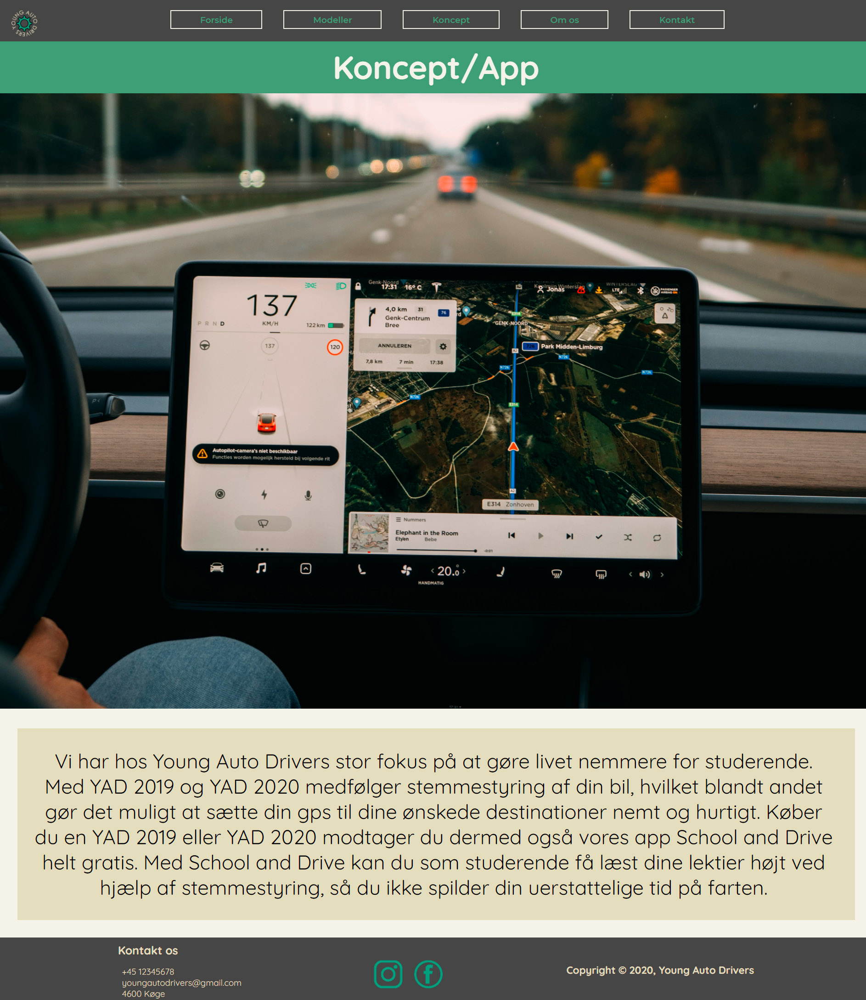
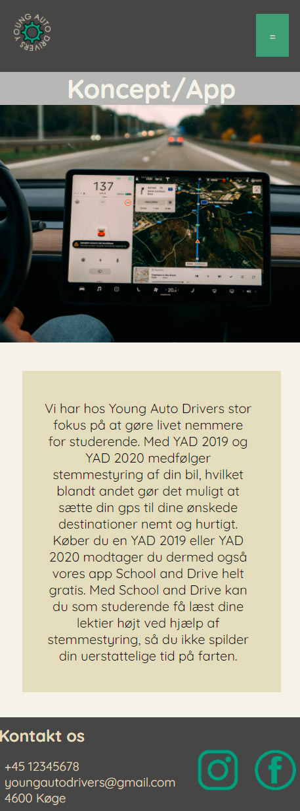
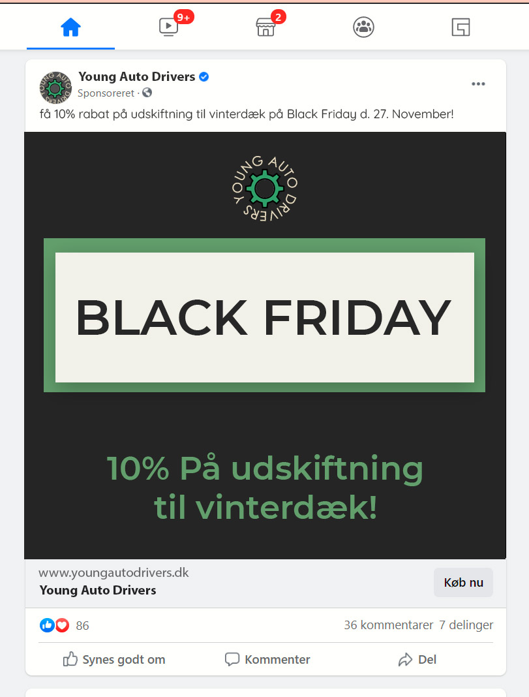
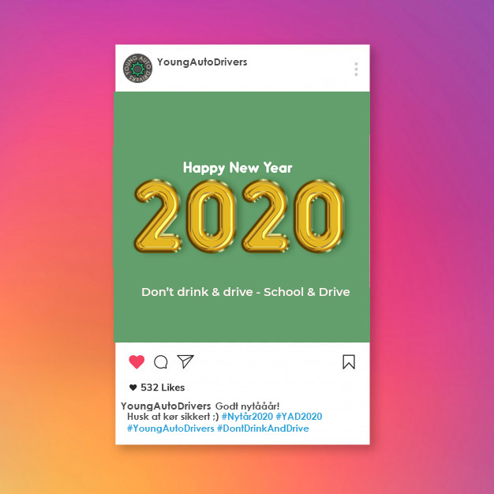

Desktop format

Mobil format

Vi valgte at lave mobilformat og
desktopformat meget ens.
Dog er billedet i mobilformat gjort
mindre, og sidens overskrift har fået
grå baggrund.
Dette er gjort for ikke at være for
mange distraherende elementer på
en mindre skærm.
Derudover er navigationen i header,
skiftet ud med en burgermenu, da
det er mere mobilvenligt.
Sociale medier posts


Vi lavede i gruppen en content plan, og I
den sammenhæng lavede jeg disse falske
opslag til Facebook og Instagram.
Begge opslag er lavet i photoshop.